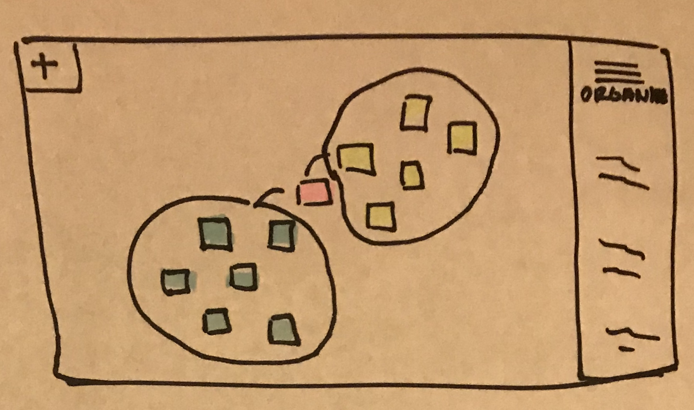
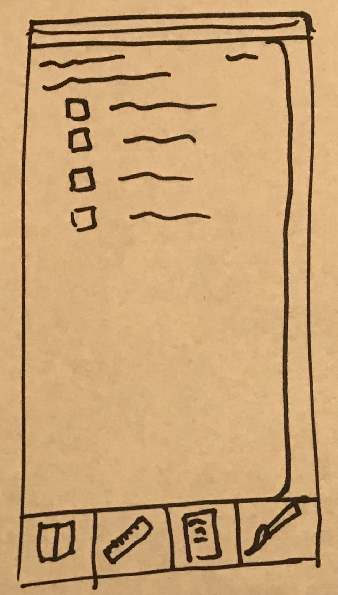
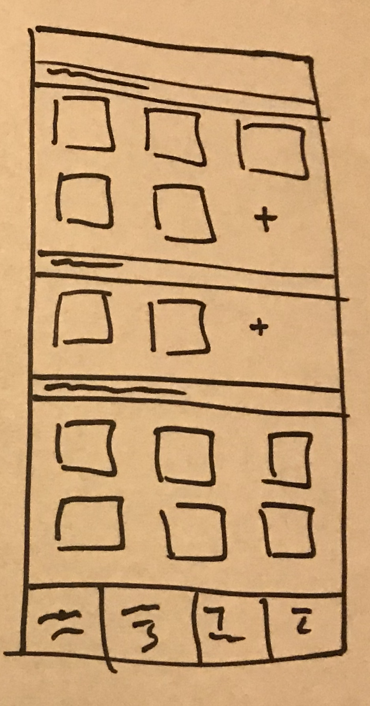

context map toolA planning tool that is used very often for designers is something called a
context map, which helps people get an understanding of the scope of an idea or problem. It sounds very vague, and that's because it is. It's really just a powerful brainstorming tool. Most people create context maps on paper or using whiteboards and sticky notes. There is definitely a time and place for doing context maps on paper, but I think there is some serious power in being able to create a context map digitally. There are no space restrictions, no chance of running out of resources (liked color-coded sticky notes), and you can do it anywhere, no matter when inspiration strikes you. However, there really aren't many applications out there that support creating context maps digitally. Things like Adobe Illustrator take too much effort for such a quick and simple thing, and simply using a word processor or a shared google drawing isn't enough, and is often too clunky. I'd like to create an application which allows you to do this kind of intensive brainstorming, and make it a gestural environment, so that much of the UI is hidden. I'd like it to feel as close to the real thing as possible, so the ideas can flow like they do when you have sticky notes and a white board in front of you.

bullet journaling inspired planner app
Something I love to do in my freetime to plan out my life is a diy planner called a bullet journal. The point of the bullet journal is that it frees people from typical planners that are very perscribed. Bullet journaling is almost exclusively done on paper, as it's hard to imitate the freedom of paper and pen on to a screen. I think it'd be an interesting challenge to try to do so, though. This app would make some of the tedious things of bullet journaling easier by allowing users to re-use their own templates or place down commonly used stickers, symbols, or texts. It would also be much more convenient to use in a phone which you already carry everywhere, and require no purchase of special dotted notebooks, fun pens, or decorative stickers. I would also want to make sure that the bullet journal app would not lose any of the creativity that a lot of bullet journal users value.

makeup inventory tracker app
My final idea is to create a makeup inventory tracking app to help people who have a lot of makeup organize their collection and buy smarter. Many times, makeup collections can get really large, and it can be difficult to remember which items or colors of items you already own. It's easy to buy too much makeup, but using this app, users can keep their buying in check. If they go to buy more, and see something they want, they can use the app to make sure they don't already have a similar item or color to that. The app would encourage less spending. It could also help organize users' collections, by sorting items by type and color and allowing users to see a full snapshot of everything they own in one place.
